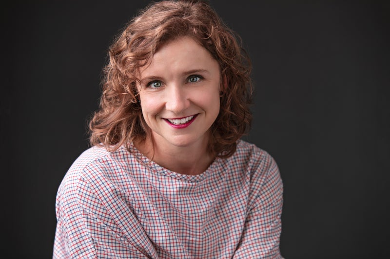
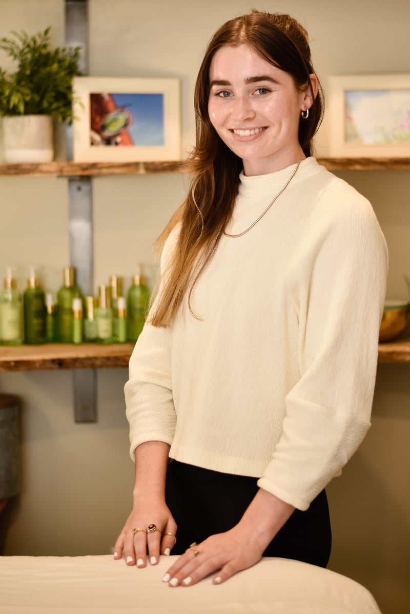

Lisa's passion for hair started as a young girl watching her aunt and grandmother do hair. Growing up in a salon she noticed what an impact you could make on somebody's day just by making them feel beautiful. After graduating from school, Lisa decided was her passion. After 21 years Lisa now owns Parlour in Middlebury, VT. Lisa lives in Salisbury, VT with her two kids and Coach Phelps.
Susan Woloohojian
☏ Front Desk
⋆Kerastase Ambassador
Susan started at Parlour as a client and jumped at the chance to join the team. Susan has a passion for all things Parlour and loves helping our clients. Whether it’s selecting the perfect shade of foundation or lipstick, helping you find an appointment, managing the cancellation list or helping you put together the perfect gift box, Susan is thrilled to help. She is our Kerastase Ambassador and is responsible for most of our social media. Outside of Parlour, Susan serves on the Board of Trustees of Eastern States Expo, home of The Big E, and loves photography and working out.

Genevieve
✁Master Stylist
⋆Davines Ambassador
⋆Owner Old Elm Haircare
Genevieve has been specializing in cutting for over 15 years. Starting as an apprentice in Portland Maine, she’s attended endless continuing education classes from New York, to Vegas, to Paris. What keeps Genevieve excited are the moments when a clients get to fully express their personality through their hair. Giving a client a cut that makes them feel confident, carefree, and strong in their own skin is the best feeling.

Molly
☺︎ Esthetician
With a love for wellness, passion for skincare, and general love for the beautiful Green Mountains of Vermont, Molly recently relocated back home to pursue her career in her home state. When she is not performing brow waxes and sharing the many benefits of facials, she can be found at the barn riding horses, on the ski slopes, or pursuing artistic hobbies like painting or photography.